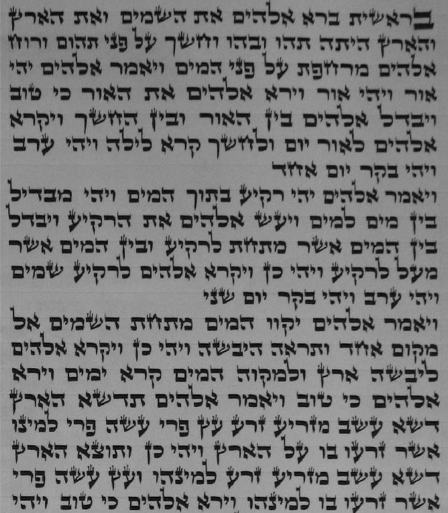

In the Beginning
Genesis 1:1–2:3 · בראשית
Must-see
Where The very first column and a half, right beside the rollers. 0% around column 1

Look for An oversized ב opens the Torah. Then count the paragraphs: each day of Creation ends with the rest of its line left blank, so the start of the Torah reads like a list of seven days.
Say The Torah begins with bet, the second letter. The rabbis noticed that ב is closed on the top, the bottom, and the back, and open only toward the words ahead. Their lesson: start here and keep moving forward (B’reishit Rabbah 1:10).
Bonus Just after the seventh day (Genesis 2:4), the word בהבראם (b’hibar’am, “when they were created”) has a tiny ה. The Talmud says this world was created with the letter hei (Talmud Menachot 29b).